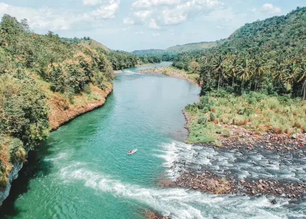
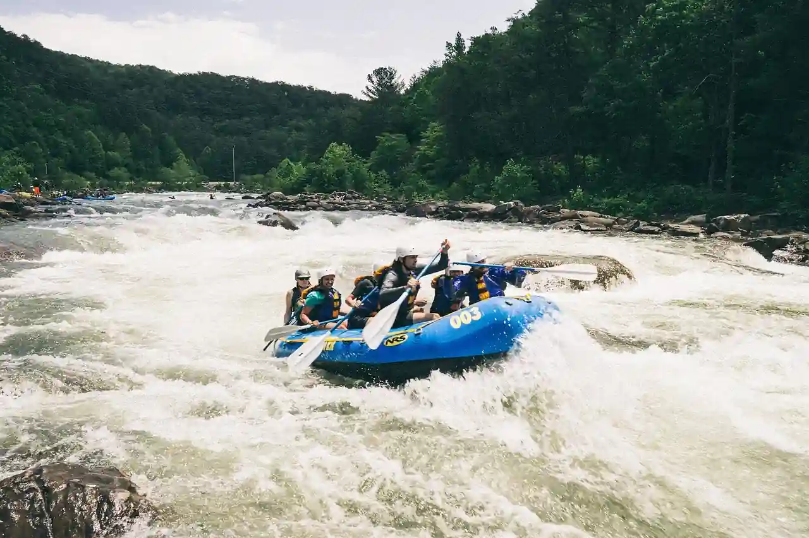
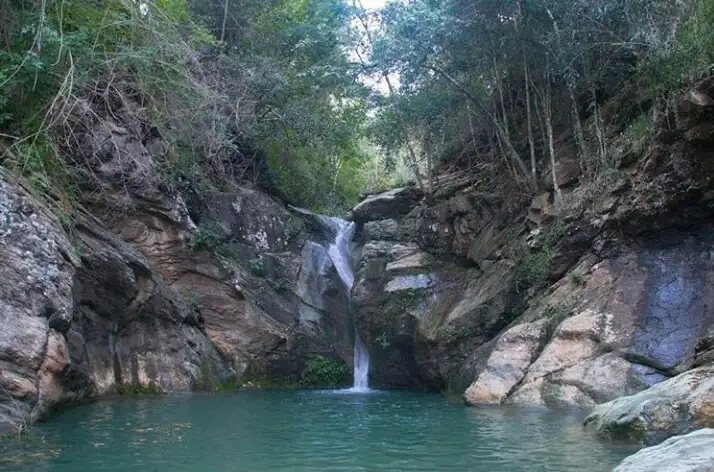
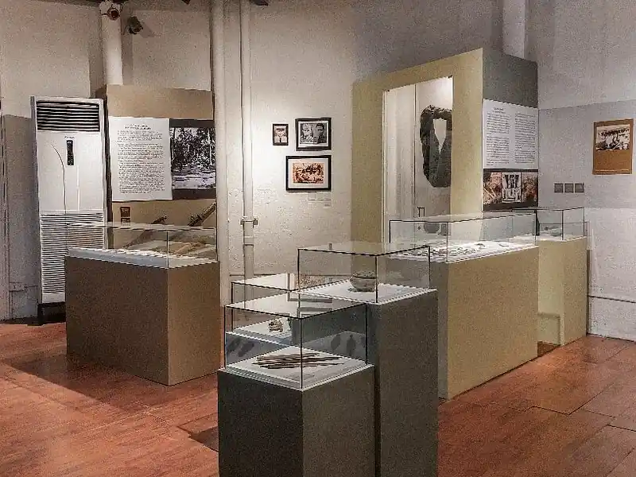
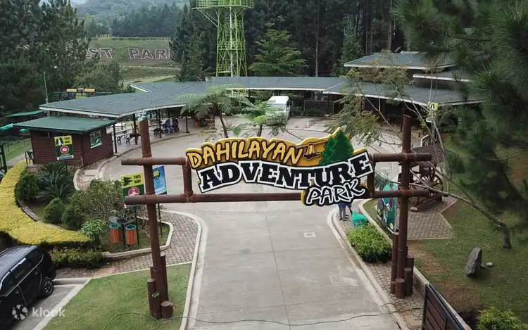
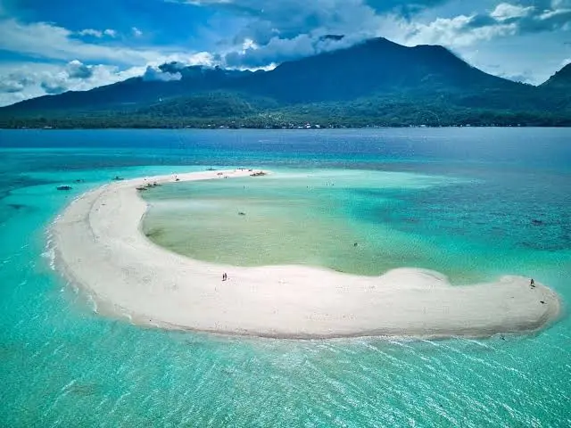
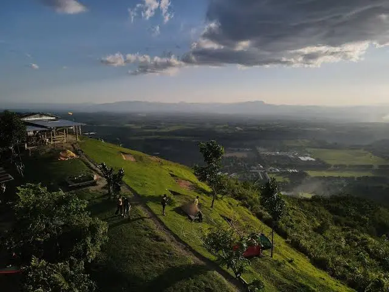

Discover places, adventures, and experiences in Northern Mindanao.
Cagayan de Oro, also known as the City of Golden Friendship, is a vibrant city in Northern Mindanao, Philippines. It is known for its friendly atmosphere, exciting outdoor adventures, local food, and rich culture. One of its popular attractions is whitewater rafting along the Cagayan River, which attracts visitors looking for adventure. The city also offers shopping areas, cafés, restaurants, parks, and other places where people can relax and enjoy their time. Beyond the city, visitors can explore nearby destinations in Bukidnon, Iligan, Misamis Oriental, and Camiguin, which offer beautiful landscapes, waterfalls, beaches, and other nature experiences. With its combination of city life, adventure, and access to nearby destinations, Cagayan de Oro is a great starting point for discovering the beauty of Northern Mindanao.





